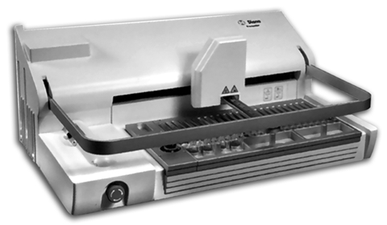

Diana
Analizador de inmunohematología

DESCRIPCIÓN:
La estandarización de la técnica de filtración en gel con la alta sensibilidad y especificidad de nuestros reactivos son la base del sistema DIANA.
Registro: 989E96 SSA
DATOS COMPLEMENTARIOS: Para mayor información, asesoría técnica y pedidos favor de contactarnos en:
HEMOSER, S.A. DE C.V.
Teléfono: (55) 5255-2525
Fax: (55) 5255-3818
e-mail: hemoser@hemoser.com
www.hemoser.com